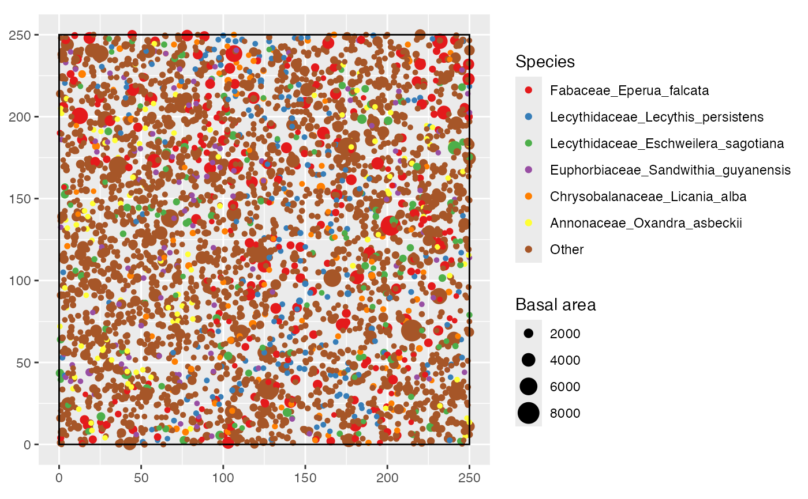

This method is from the dbmss package. See dbmss::autoplot.wmppp.
# S3 method for class 'wmppp'
autoplot(
object,
...,
show.window = TRUE,
MaxPointTypes = 6,
Other = "Other",
main = NULL,
xlab = NULL,
ylab = NULL,
LegendLabels = NULL,
labelSize = "Weight",
labelColor = "Type",
palette = "Set1",
windowColor = "black",
windowFill = "transparent",
alpha = 1
)an object to be plotted.
extra arguments, currently unused.
if TRUE, the borders of the window containing the points are shown on the point map.
the maximum number of different point types to show. If the point set contains more of them, the less frequent ones are gathered as "Other". This number must be limited for readability and not to exceed the number of colors offered by the palette.
the name of the point types gathered as "Other"
the title of the plot.
the X-axis label.
the Y-axis label.
a vector of characters.
The first two items describe the observed and null-hypothesis curves, the third and last item the confidence interval.
To be used only in plots with two curves (typically observed and expected values).
The default is NULL to display the full description of functions.
the guide of the point size legend in point maps, i.e. what the PointSize mark represents.
the guide of the point color legend in point maps, i.e. what the PointType mark represents.
The color palette used to display point types in maps. See ggplot2::scale_colour_brewer.
the color used to draw the limits of the windows in point maps.
the color used to fill the windows in point maps.
the opacity of the confidence envelope (in function values) or the points (in maps), between 0 and 1.
autoplot(paracou_6_wmppp)
